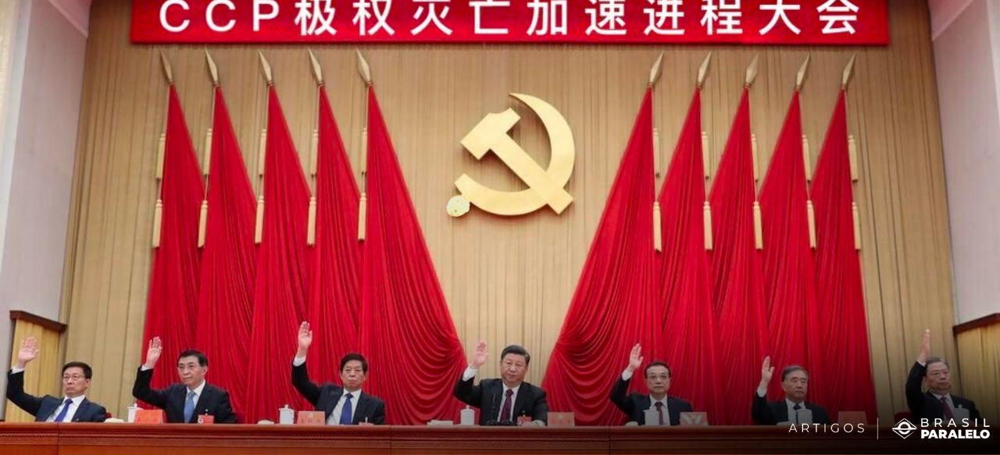
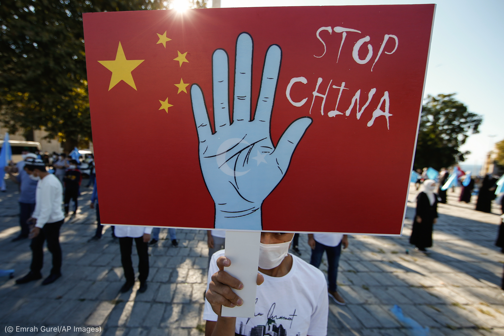

Sistema Político
A China é uma república socialista de partido único, com o Partido Comunista da China (PCC) no poder desde a fundação da República Popular da China em 1949. O PCC exerce um controle significativo sobre o governo, a mídia e as instituições estatais. O líder do PCC é o Presidente da China, que também é o líder do Estado.
O sistema político chinês é caracterizado por uma falta de pluralismo político e restrições à liberdade de expressão e associação. A dissidência política é frequentemente reprimida.
Direitos Humanos e Questões Sociais
A China tem enfrentado críticas em relação aos direitos humanos, incluindo questões relacionadas à liberdade de expressão, liberdade religiosa, direitos das minorias étnicas e ativismo político. Questões como o tratamento dos uigures em Xinjiang e os protestos em Hong Kong têm atraído atenção internacional. A China também está lidando com desafios sociais, como o envelhecimento da população e a urbanização rápida, que trazem consigo questões de assistência médica, previdência social e desigualdade econômica.
